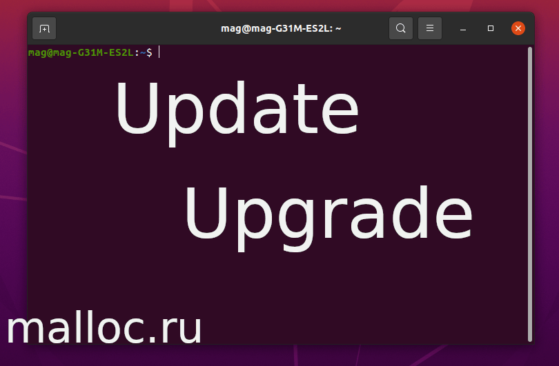

<!DOCTYPE html><html/><title>Как обновить Ubuntu через терминал</title><meta http-equiv="content-type" content="text/html; charset=utf-8"/><meta name="description" content="Обновление Linux на примере дистрибутива Ubuntu. Обновление операционной системы показано через терминал. Используются команды update, а потом upgrade. В итоге делаем исполняемый файл, в котором будут храниться все наши команды. Подробнее..."/><meta name="viewport" content="width=device-width, initial-scale=1"/><link rel="stylesheet" href="../../css/style.css"/><link rel="stylesheet" href="https://cdnjs.cloudflare.com/ajax/libs/font-awesome/4.7.0/css/font-awesome.min.css"/><script>document.oncontextmenu = cmenu; function cmenu(){ return false; }</script><!-- Body --><body lang="ru-RU" class="malloc-post"/><noscript/></noscript><!-- Navbar --><div class="malloc-top"/><div class="malloc-bar malloc-theme-main malloc-left-align malloc-large malloc-card"/><!-- Top bar --><a href="../../index.html" class="malloc-bar-item malloc-button malloc-hover-white" style="border-radius:15px;"/>главная</a><a href="../../articles-1.html" class="malloc-bar-item malloc-button malloc-hover-white" style="border-radius:15px;"/>статьи</a><a href="../../about.html" class="malloc-bar-item malloc-button malloc-hover-white" style="border-radius:15px;"/>донат</a></div></div><!-- Main content: shift it to the right by 210-275 pixels when the sidebar is visible --><div class="malloc-main malloc-auto" style="margin-left:150px"/><!-- main{ --><div class="malloc-row malloc-padding-64"/><!-- text{ --><!-- Донат --><div class="malloc-threequarter malloc-padding"/><!-- { --><h1 class="malloc-center malloc-theme-main malloc-card malloc-auto malloc-cursive" style="border-radius:15px;">Как обновить Ubuntu через терминал</h1><!-- Вступление --><p style="font-size: 14px" class="malloc-padding-small"/>Обновление Linux на примере дистрибутива Ubuntu.</br>Обновление операционной системы показано через терминал. Используются команды update, а потом upgrade. В итоге делаем исполняемый файл, в котором будут храниться все наши команды.<br/><br/></p><div class="malloc-auto" style="margin-top:40px; width:80.99999%; hight:80.99999%"/></div><!-- Подзаголовок 0 --><p class="malloc-padding-small"/><h2 class="malloc-text-teal">Обновляемся: update, upgrade</h2><ul class="malloc-ul"/><div class="malloc-padding"/><div class="malloc-text-blue"/>Шаг 0</div><li/>Для начала откроем терминал:<br/>&quot;Ctrl+Alt+T&quot; или &quot;ПКМ, открыть Терминал&quot;(англ. - Open in Terminal).<br/>Теперь в открывшемся окне Терминала, записываем команды для обновления операционной системы. Они подробно описаны ниже.</li><div class="malloc-text-blue"/>Шаг 1</div><li/>В терминале пишем это:<br/><code class="malloc-text-teal malloc-border malloc-bar-item"/>sudo apt update</code><br/>Невидно пароля при вводе? Это нормально. Это одно из средств защиты Ubuntu.<br/>Введите пароль и нажмите &quot;Enter&quot;.<br/><p class="malloc-padding-small malloc-cursive malloc-border malloc-theme-l5" style="font-size:14px"/>&quot;sudo&quot; - это права суперпользователя (root).<br/>&quot;apt update&quot; - обновить список доступных пакетов .<br/></p></li><div class="malloc-text-blue"/>Шаг 2</div><li/>Загружаем обновления на компьютер:<br/><code class="malloc-text-teal malloc-border malloc-bar-item"/>sudo apt upgrade -y</code><br/>Нажмите &quot;Enter&quot;(вводим пароль, если спросил):<br/><p class="malloc-padding-small malloc-cursive malloc-border malloc-theme-l5" style="font-size:14px"/>&quot;apt upgrade&quot; - обновить систему, установив/обновив пакеты<br/> &quot;-y&quot; - этот ключ нужен для согласия на последующие действия.</p></li></div></ul>В конце статьи есть <a href="#Видео"/>видео</a>. В нем показываю все на практике.<br/></p><hr/><!-- Подзаголовок 1 --><p class="malloc-padding-small"/><h2 class="malloc-text-teal">Что дальше</h2>А теперь немного упростим себе задачу. Сделаем так, что бы все команды, которые были описаны выше, выполнялись за одну команду. Этот способ сэкономит нам немного времени и немного расширит наш кругозор.<br/>Мы создадим исполняемый файл &quot;sysup.sh&quot;.&#42;<br/><ul class="malloc-ul"/><div class="malloc-padding"/><div class="malloc-text-blue" style="font-size:16px"/>Шаг 0.</div><li/>Для начала откроем терминал:<br/>&quot;Ctrl+Alt+T&quot; или &quot;ПКМ, открыть Терминал&quot;(англ. - Open in Terminal).<br/>Теперь в открывшемся окне Терминала, записываем команды для обновления операционной системы. Они подробно описаны ниже.</li><div class="malloc-text-blue"/>Шаг 1</div><li/>Создадим директорию (папку) - system_update:<br/><code class="malloc-text-teal malloc-border malloc-bar-item"/>mkdir system_update</code><br/>Директория нужна, что бы хранить там файл(ы).<p class="malloc-padding-small malloc-cursive malloc-border malloc-theme-l5" style="font-size:14px"/>&quot;mkdir&quot; - это команда для создания новых директорий (папок).<br/></p></li><div class="malloc-text-blue"/>Шаг 2</div><li/>Теперь, зайдем в папку и создадим там файл:<br/><code class="malloc-text-teal malloc-border malloc-bar-item"/>cd system_update && touch sysup.sh</code><br/><p class="malloc-padding-small malloc-cursive malloc-border malloc-theme-l5" style="font-size:14px"/>&quot;cd&quot; - нужна для перемещения по директориям.<br/>&quot;&&&quot; - с помощью 'И' мы можем выполнить несколько команд попорядку.<br/> &quot;touch&quot; - создание пустого файла.</p></li><div class="malloc-text-blue"/>Шаг 3</div><li/>Запишем в наш файл команды, которые нужны для обновления системы:<br/><code class="malloc-text-teal malloc-border malloc-bar-item"/>echo 'sudo apt update && sudo apt upgrade -y' > sysup.sh</code><br/>На первый взгляд команда кажеться сложной, но приглядевшись вы поймете, что все намного проще, чем кажется.<p class="malloc-padding-small malloc-cursive malloc-border malloc-theme-l5" style="font-size:14px"/>&quot;echo&quot; - в данном случае используется для записи строки в файл sysup.sh<br/></p></li><div class="malloc-text-blue"/>Шаг 4</div><li/>Теперь дадим нашему файлу &quot;sysup.sh&quot; права на исполнение:<br/><code class="malloc-text-teal malloc-border malloc-bar-item"/>chmod +x sysup.sh</code><br/><p class="malloc-padding-small malloc-cursive malloc-border malloc-theme-l5" style="font-size:14px"/>&quot;chmod +x&quot; - позволяет задать параметры запуска файла на исполнение.<br/></p></li><div class="malloc-text-blue"/>Шаг 5</div><li/>Все готово, теперь мы можем запустить файл и он выполнить сразу две команды за раз:<br/><code class="malloc-text-teal malloc-border malloc-bar-item"/>./sysup.sh</code><br/></li></div></ul><sub class="malloc-cursive"/>&#42; Далее вытекает возможность сделать ярлык на рабочем столе. Но это выходит за рамки этой статьи.</sub><br/><sub class="malloc-cursive"/>&#42;&#42; На самом деле файл можно создать с любым расширением, но все же соблюдайте этикет.</sub><!-- Видео --><br id="Видео"><br/><div alt="Video-desktop" class="malloc-ad-desktop malloc-center"/><!-- для ПК --><object style="width:560px; height:315px;" data="https://www.youtube.com/embed/VoYLMjN2WJM" frameborder="0" allow="accelerometer; autoplay; clipboard-write; encrypted-media; gyroscope; picture-in-picture" allowfullscreen="allowfullscreen"/></object></div><div alt="Video-mobile" class="malloc-ad-mobile malloc-center"/><!-- для мобильников --><object style="width:250px; height:180px;" data="https://www.youtube.com/embed/VoYLMjN2WJM" frameborder="0" allow="accelerometer; autoplay; clipboard-write; encrypted-media; gyroscope; picture-in-picture" allowfullscreen="allowfullscreen"/></object></div></p><hr/><h2 class="malloc-text-teal">Заключение</h2><p class="malloc-padding-small"/>Мы рассмотрели обновление операционной системы Ubuntu, через терминал.<br/>Конечно можно поместить хоть двадцать, сто, тысячу команд в этот файл и все будет исполняться по порядку. Все зависит от вашей цели.<br/><br/>Надеюсь, статья была полезной и у вас получилось найти ответы на свои вопросы.</p><div class="malloc-text-green malloc-padding-12" title="Спасибо за статью"/><!-- для ПК --><object title="На книги" class="malloc-ad-desktop" data="https://yoomoney.ru/quickpay/shop-widget?writer=seller&targets=%D0%9D%D0%B0%20%D0%BC%D0%B5%D1%87%D1%82%D1%83&targets-hint=&default-sum=49&button-text=12&payment-type-choice=on&mobile-payment-type-choice=on&hint=%D0%94%D0%B5%D1%80%D0%B6%D0%B8%20%D0%BD%D0%B0%20%D0%B1%D1%83%D0%BC%D0%B0%D0%B3%D1%83%20%D0%B8%D0%BB%D0%B8%20%D0%9E%D1%82%20%D1%87%D0%B8%D1%81%D1%82%D0%BE%D0%B3%D0%BE%20%D1%81%D0%B5%D1%80%D0%B4%D1%86%D0%B0&successURL=&quickpay=shop&account=410015474057891" width="500" height="221" allowtransparency="true" scrolling="no"/></object></div><div class="malloc-text-green malloc-padding-12 malloc-center" title="Спасибо за статью"/><!-- для мобильников --><object title="На книги" class="malloc-ad-mobile" data="https://yoomoney.ru/quickpay/shop-widget?writer=seller&targets=%D0%9D%D0%B0%20%D0%BC%D0%B5%D1%87%D1%82%D1%83&targets-hint=&default-sum=49&button-text=12&payment-type-choice=on&mobile-payment-type-choice=on&hint=%D0%94%D0%B5%D1%80%D0%B6%D0%B8%20%D0%BD%D0%B0%20%D0%B1%D1%83%D0%BC%D0%B0%D0%B3%D1%83%20%D0%B8%D0%BB%D0%B8%20%D0%9E%D1%82%20%D1%87%D0%B8%D1%81%D1%82%D0%BE%D0%B3%D0%BE%20%D1%81%D0%B5%D1%80%D0%B4%D1%86%D0%B0&successURL=&quickpay=shop&account=410015474057891" width="230" height="250" allowtransparency="true" scrolling="no"/></object></div></div><!-- } --><!-- Правый сайдбар { --><div class="malloc-quarter malloc-text-gray malloc-padding-16 malloc-card" title="Новости" style="margin-top:90px"/><div class="malloc-container malloc-text-grey" style="border-radius:15px;"/><div class="malloc-center"/>НОВОСТИ</div><div class="malloc-container malloc-theme-l1 malloc-padding-large" style="font-size: 14px" id="news"/></div></div><div class="malloc-center malloc-padding-16"/><div style="display:inline-block; font-size:12px; border-radius:15px;" class="malloc-padding-small malloc-theme-clock"/><div id="mytime" style="display:inline-block; margin-right: 5px" title="Время"/></div>|<div id="mydate" style="display:inline-block; margin-left: 1px" title="Дата"/></div></div></div></div><!-- } Правый сайдбар --><div class="malloc-center" id="AD-payeer" target="_blank"></div></div><!--/ текст --></div><!--/ main --><!-- Footer --><div class="malloc-padding-64 malloc-ad-desktop"/></div><footer/><div class="malloc-auto"/><div class="malloc-container malloc-theme-l4 malloc-padding-large malloc-ad-desktop" style="font-size:12px; margin-left:65px; border-radius:15px;"/><!-- Ссылки --><ul class="malloc-ul malloc-col"/><b/>Донат:</b><div class="malloc-padding-12"/><div id="Donat-footer" class="malloc-hover-red" style="border-radius:5px;"/>На книги</div><div id="Dream-footer" class="malloc-hover-red" style="border-radius:5px;"/>На мечту</div><div id="Question-footer" class="malloc-hover-red" style="border-radius:5px;"/>Звдать вопрос</div></div></ul><!-- Соц. сети --><ul class="malloc-ul malloc-col"/><b/>Каналы:</b><div class="malloc-padding-12"/><div id="Telegram-footer" class="malloc-hover-green" style="border-radius:5px;"/>Телеграм</div><div id="Youtube-footer" class="malloc-hover-green" style="border-radius:5px;"/>Youtube</div></div></ul><!-- Допольнительно --><ul class="malloc-ul malloc-col"/><b/>Дополнительно:</b><div class="malloc-padding-12"/><div id="Topmail-footer" class="malloc-hover-white" style="border-radius:5px;"/>Рейтинг сайта</div><div id="Payeer-footer" class="malloc-hover-white" style="border-radius:5px;"/>Payeer</div></div></ul></div><!-- Copyright --><div class="malloc-container malloc-theme-l5 malloc-card malloc-ad-desktop" style="margin-left:65px; border-radius:15px;"/><h6 class="malloc-center" title="Все права защищены">&copy; malloc.ru, 2021</h6></div><!-- Copyright --><div class="malloc-container malloc-theme-l2 malloc-card-4 malloc-ad-mobile" style="border-radius:15px;"/><h6 class="malloc-center" title="Все права защищены">&copy; malloc.ru, 2021</h6></div></div></footer><!--JScript --><script src="scripts-0.js"/></script><script src="../../js/news.js"/></script></body></html>
